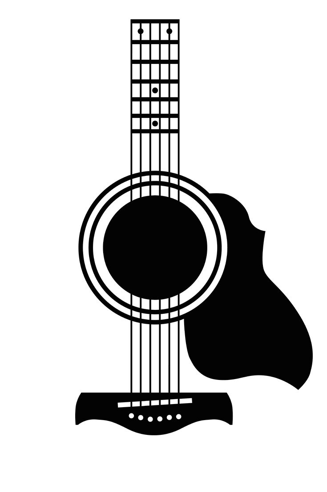
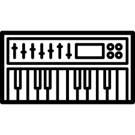

Artists of the month
 

The Strokes
After a seven year break, American rock band the Strokes released their sixth studio album, “The New Abnormal,” on Apr. 10. The album, expertly produced by the legendary Rick Rubin, is a glittering blend of ’80s pop and The Strokes’ own characteristic edge grunge-style vocals. Every track is led by the keyboards, synths, and vibrant guitars of ’80s synth-pop, giving the album an optimistic sheen that plays against its somewhat nihilistic subject matter.
Carpenter Brut
To say that synthwave and the ’80s go together like two peas in a pod would be a massive understatement; the entire genre is rooted in retro-futuristic nostalgia. So it’s no surprise to see one of synthwave’s heavyweights, Carpenter Brut, tackling “She’s a Maniac,” Michael Sembello’s theme song from the 1983 film Flashdance. After many live versions, the french synthwave artist released an official studio version.
Vulfpeck
Vulfpeck have always been a fun-loving bunch. The jam collective fronted by Theo Katzman make it their goal to share thoroughly dynamic songs with easy-going grooves, and their last release, The Joy of Music. The Job of Real Estate contains some of their most enjoyable output. You can’t go wrong with any of their records (or any of the records made by the band’s various rotating members, many of whom have successful solo careers as well), but The Joy of Music. The Job of Real Estate is a great introduction to the band (and the universe and rabid fanbase they’ve created).
Gorillaz
With their 8th podcast released on youtube, Gorillaz's last project approaches its end. The last of the Song Machine's 13 episodes is announced for June 9th, and brings many expectations. After 4 tracks starring premium artists like rapper Slowthai and punk band SLAVES in episode one, Momentary Bliss, the album closes with Friday 13th, featuring Octavian, a french-british rapper who won the 2019 BBC's Music of Sound Award. Damon Albarn and Jamie Hewlett's crazy universe is once again brought to life, with even more passion this time. Video clips include excentric details and various cameos of Murdoc, 2D, Noodle and Russel.